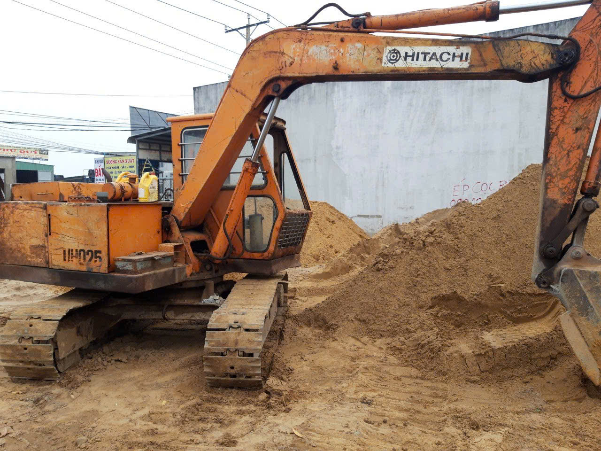
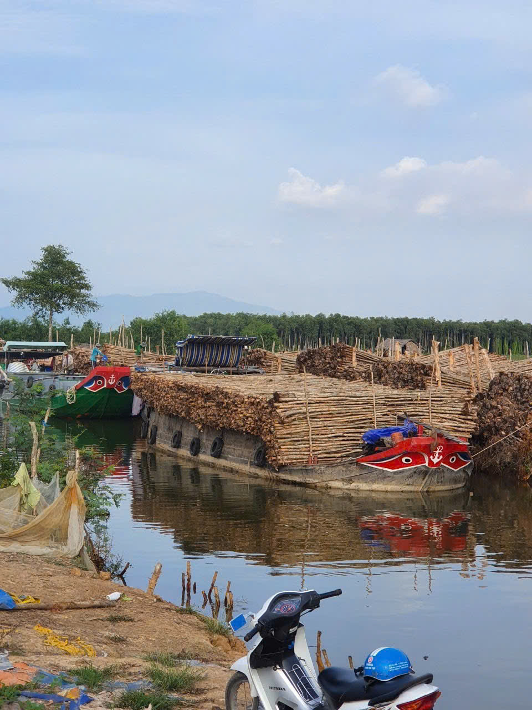
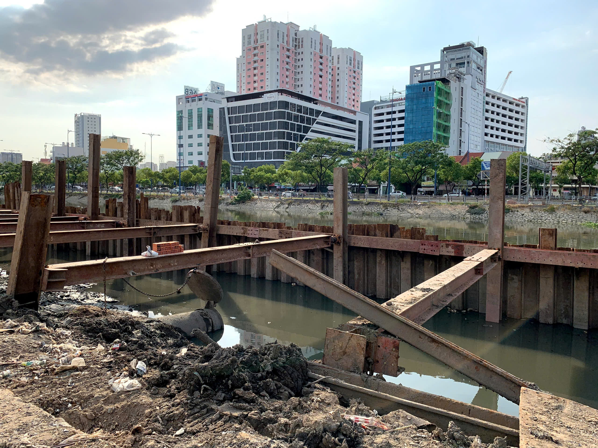

CÔNG TY TNHH ĐT TM DV XÂY DỰNG GIA HƯNG là một trong những đơn vị uy tín hàng đầu tại khu vực miền Nam trong lĩnh vực cung cấp cừ tràm và thi công xử lý nền móng công trình. Với hơn 10 năm kinh nghiệm, Gia Hưng đã và đang là đối tác đáng tin cậy của nhiều nhà thầu, doanh nghiệp và cá nhân trong hàng trăm dự án lớn nhỏ trên cả nước.
Chúng tôi chuyên cung cấp cừ tràm tự nhiên, chất lượng cao với đa dạng quy cách, đáp ứng nhu cầu sử dụng cho các công trình nhà ở dân dụng, công trình công nghiệp, hạ tầng giao thông, kè sông, kênh rạch, xử lý nền đất yếu... Ngoài ra, Gia Hưng còn nhận thi công trọn gói phần móng bằng cừ tràm, đảm bảo tiến độ nhanh – kỹ thuật đúng – giá thành tối ưu.
Điểm mạnh nổi bật của Gia Hưng đến từ:
Nguồn nguyên liệu ổn định, được tuyển chọn kỹ lưỡng từ những vùng trồng tràm lâu năm – giúp đảm bảo độ bền, sức chịu lực và hiệu quả thi công.
Đội ngũ kỹ sư, công nhân lành nghề, giàu kinh nghiệm thực chiến trong xử lý nền đất yếu tại nhiều địa hình khó như vùng ven sông, đất bùn yếu, khu vực có mực nước ngầm cao...
Hệ thống vận chuyển, bốc dỡ chuyên nghiệp, hỗ trợ giao hàng tận công trình với thời gian nhanh chóng và chi phí hợp lý.
Tinh thần hợp tác – phục vụ tận tâm, lấy uy tín và sự hài lòng của khách hàng làm thước đo cho sự phát triển.
Với phương châm “Vững móng – Dẫn lối thành công”, Gia Hưng cam kết cung cấp những giải pháp xử lý nền móng bằng cừ tràm hiệu quả, bền vững và tiết kiệm nhất cho mọi công trình. Chúng tôi không ngừng cải tiến chất lượng dịch vụ, mở rộng quy mô và nâng cao chuyên môn đội ngũ để đáp ứng ngày càng tốt hơn yêu cầu của thị trường xây dựng hiện đại. Hãy để Gia Hưng trở thành người bạn đồng hành đáng tin cậy trong mọi công trình của bạn – từ nền móng vững chắc đến thành công bền lâu.
  